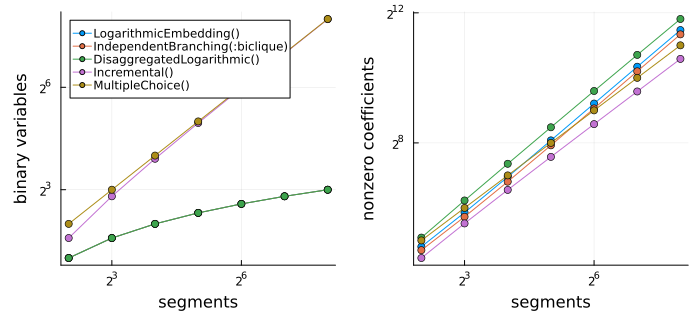

Formulation methods
The method keyword of PiecewiseLinear chooses how a function is formulated with auxiliary variables and constraints. All methods give a correct model; they differ in size and in how fast a solver finds the optimum. Which method is fastest depends on the problem and the solver, so it is worth trying a few methods on representative instances. See Huchette and Vielma (2023) for a computational comparison.
Choosing a method
The following advice is based on computational tests with HiGHS and Xpress on transportation problems with concave and discontinuous costs, resource allocation with S-shaped utilities, and bivariate functions on grids.
- Univariate functions: the default
Logarithmicis a sound choice. The other logarithmic methods (LogarithmicIndependentBranching,IndependentBranching,ZigZagBinary,ZigZagIntegerandDisaggregatedLogarithmic) perform similarly, each within about 30% of the others. - With a solver that supports SOS2 constraints, e.g. Gurobi or Xpress, try
NativeSOS2first. It was the fastest method with Xpress, often by a large margin. - For minimizing concave costs and for discontinuous functions,
MultipleChoicewas the fastest method with HiGHS, and second only toNativeSOS2with Xpress, despite itsdbinary variables. It explores far fewer nodes than the logarithmic methods on such problems. - For functions with convex stretches in the
Epigraphdirection (concave in theHypographdirection), e.g. S-shaped utilities that are maximized,ConvexPiecesonly needs binary variables for the convex pieces rather than for the segments. It was 2 to 3 times faster thanMultipleChoiceon S-shaped functions, and a function that is convex in the direction needs no binary variables at all. - Bivariate functions: use a grid method. With HiGHS,
GreedyTriangleSelectionandOptimalTriangleSelectionwere the fastest on any triangulation, andK1andUnionJackon their own triangulations. With a solver that supports SOS2 constraints, the grid methods are close to each other, andNativeSOS2as the axis method, e.g.SixStencil(NativeSOS2()), was about three times faster than the default axis method. - Avoid
ConvexCombinationandIncremental, which were never competitive, andConvexCombination,MultipleChoiceandDisaggregatedLogarithmicfor bivariate functions, except on very small grids. - Use the
EpigraphorHypographdirection when it is valid, see Outputs and directions. This is typically 10% faster, and up to 30% forMultipleChoice,LogarithmicandDisaggregatedLogarithmic.
Below, d is the number of segments of a univariate function.
Univariate functions
The default is Logarithmic for continuous functions, MultipleChoice for discontinuous functions and DisaggregatedLogarithmic for relaxations.
| Method | Integer variables | Discontinuous | Relaxation |
|---|---|---|---|
LogarithmicEmbedding, also Logarithmic() | ceil(log2(d)) binary | no | no |
LogarithmicIndependentBranching | ceil(log2(d)) binary | no | no |
IndependentBranching | ceil(log2(d)) binary | yes | yes |
ZigZagBinary | ceil(log2(d)) binary | no | no |
ZigZagInteger | ceil(log2(d)) general integer | no | no |
DisaggregatedLogarithmic | ceil(log2(d)) binary | yes | yes |
Incremental | d - 1 binary | no | no |
ConvexCombination | d binary | no | no |
MultipleChoice | d binary | yes | no |
NativeSOS2 | none, branching by the solver | no | no |
ConvexPieces | one binary per convex piece, none for a convex function | yes | no |
A relaxation, see UnivariatePWLRelaxation, is a band between a lower and an upper piecewise linear bound. The two methods that support it model both bounds with one set of binary variables.
NativeSOS2 leaves the branching to solvers that support SOS2 constraints, e.g. Gurobi or Xpress; for other solvers, such as HiGHS, MathOptInterface reformulates the constraint with binary variables, which is much slower than the other methods.
The number of binary variables is only one measure of the size of a formulation. The logarithmic methods have few binary variables but denser constraints: their number of nonzero coefficients grows like d * log2(d), against d for the linear-size methods, although for a few hundred segments the difference is within a factor of two. The figure counts both for a function with d segments:
using JuMP, PiecewiseLinearOpt, Plotsmethods = [Logarithmic(), IndependentBranching(), DisaggregatedLogarithmic(), Incremental(), MultipleChoice()]ds = [4, 8, 16, 32, 64, 128, 256]function model_size(method, d) model = Model() @variable(model, x) _, formulation = add_formulation(model, PiecewiseLinear(UnivariatePWLFunction(0:d, t -> t^2); method), x) nonzeros = sum( length(constraint_object(c).func.terms) for c in formulation.constraints if constraint_object(c).func isa AffExpr ) return count(is_binary, formulation.variables), nonzerosendsizes = [model_size(method, d) for method in methods, d in ds]binaries = plot( ds, [first.(sizes[k, :]) for k in eachindex(methods)]; label = permutedims(string.(methods)), legend = :topleft, ylabel = "binary variables",)nonzeros = plot( ds, [last.(sizes[k, :]) for k in eachindex(methods)]; label = "", ylabel = "nonzero coefficients",)plot( binaries, nonzeros; xscale = :log2, yscale = :log2, xlabel = "segments", marker = :circle, layout = (1, 2), size = (700, 320), left_margin = 5Plots.mm, bottom_margin = 5Plots.mm,)
Bivariate functions
Bivariate functions are defined on a grid, where each cell is split into two triangles. The default method depends on the triangulation: K1 for K1Triangulation, UnionJack for UnionJackTriangulation and GreedyTriangleSelection for the others.
The grid methods select a cell with an SOS2 constraint along each axis, formulated with any univariate method in the table above (the axis_method, by default Logarithmic), and then select a triangle in the cell:
| Method | Triangle selection | Triangulation |
|---|---|---|
SixStencil | up to 6 binary | any |
NineStencil | up to 9 binary | any |
GreedyTriangleSelection | few, typically 2 to 5, found by a heuristic | any |
OptimalTriangleSelection | smallest number, typically 2 to 4, computed with a solver | any |
K1 | 2 binary | K1Triangulation |
UnionJack | 1 binary | UnionJackTriangulation |
With n₁ × n₂ grid points and a logarithmic axis method, the cell selection uses ceil(log2(n₁ - 1)) + ceil(log2(n₂ - 1)) binary variables. For solvers with support for SOS2 constraints, NativeSOS2 is also a good axis method.
GreedyTriangleSelection finds its triangle selection in milliseconds, and typically with the optimal number of binary variables. Proving that number optimal with OptimalTriangleSelection takes about a second for regular triangulations of grids up to 8×8, but can take much longer for irregular triangulations, e.g. BestFitTriangulation or RandomTriangulation. If it takes longer than its time limit, the greedy selection is used. When both the sub-solver and the solver of the model are HiGHS, and the model is solved with a single thread, give the sub-solver a single thread too, i.e. OptimalTriangleSelection(optimizer_with_attributes(HiGHS.Optimizer, "threads" => 1)), as the solve otherwise fails.
OptimalIndependentBranching instead selects a triangle directly with the smallest possible number of binary variables, which is only practical to compute for small grids, up to about 4×4 points.
Functions of more variables
ConvexCombination, DisaggregatedLogarithmic and MultipleChoice formulate functions of any number of variables. The segments must be simplices for MultipleChoice. DisaggregatedLogarithmic, the default, uses the fewest integer variables, ceil(log2(d)) for d segments. Both support discontinuous functions.
Example
Different methods give the same optimum, but different model sizes:
using JuMP, PiecewiseLinearOpt, HiGHSf(a, b) = sin(3a) * cos(2b)pwl = BivariatePWLFunction(0:0.1:1, 0:0.1:1, f)for method in ( SixStencil(), NineStencil(), K1(), GreedyTriangleSelection(), OptimalTriangleSelection(HiGHS.Optimizer), SixStencil(IndependentBranching()), ConvexCombination(),) model = Model(HiGHS.Optimizer) set_silent(model) @variable(model, x[1:2]) (z,), formulation = add_formulation(model, PiecewiseLinear(pwl; method = method), x...) @objective(model, Min, z) optimize!(model) binaries = count(is_binary, formulation.variables) println(rpad(method, 50), "binaries: ", lpad(binaries, 3), " minimum: ", round(objective_value(model); digits = 4))endSixStencil(LogarithmicEmbedding()) binaries: 11 minimum: -0.4151
NineStencil(LogarithmicEmbedding()) binaries: 17 minimum: -0.4151
K1(LogarithmicEmbedding()) binaries: 10 minimum: -0.4151
GreedyTriangleSelection(LogarithmicEmbedding(), 200)binaries: 10 minimum: -0.4151
OptimalTriangleSelection(HiGHS.Optimizer, LogarithmicEmbedding(), 60.0)binaries: 10 minimum: -0.4151
SixStencil(IndependentBranching(:biclique)) binaries: 11 minimum: -0.4151
ConvexCombination() binaries: 200 minimum: -0.4151